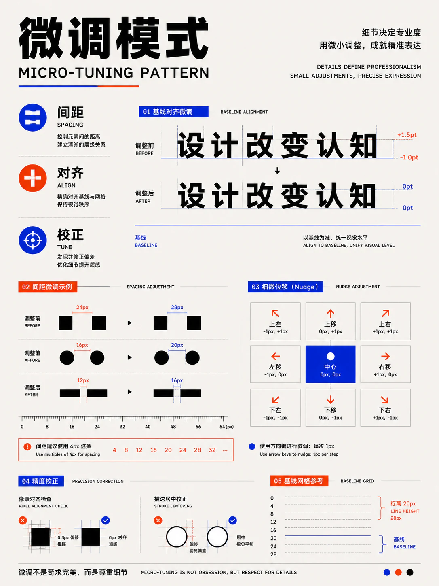

当内容天生是单栏长文，别硬凑多栏断点
Luke Wroblewski 指出，微调模式是五种响应式策略里最少见却最轻巧的一种：文章主体始终保持单栏，只按屏幕宽窄轻调标题字号、4px 倍数行高与页边留白，读者在任何设备上都不会迷失结构。
4px 基线
单栏直读
网页与 UI / 响应式重排模式 · NO. 294
MICRO-TUNING PATTERN
细节决定专业度
用微小调整，成就精准表达
DETAILS DEFINE PROFESSIONALISM
SMALL ADJUSTMENTS, PRECISE EXPRESSION
使用方向键进行微调：每次 1px（Shift 每次 4px）
细节决定专业度 · 用微小调整，成就精准表达。
原海报说「以基线为准，统一视觉水平」。数学基线是第一道纪律，但真正让一行字和一枚图标看起来齐平，还得补上第二道微调：照顾人眼的光学错觉。
点击元件检视视觉重心
几何齐平时，圆字「O」与方字「H」上下顶线完全同高。
原海报 01 模块演示了把参差的字全部拉回 0pt 基线；05 模块给出 4px 间距的 20px 行高参考。实战中请记住一句口诀：外框与行高守住基线网格，圆弧和尖角允许 1–2px 光学过冲（字型设计里称作 Overshoot，通常高出平头字母 1%–3%）。
原海报 02 模块红框专门提醒「间距建议使用 4px 倍数 · 4 8 12 16 20 24 28 32」。这不只是强迫症——它同时解决了跨倍率屏幕像素折算与视觉亲疏层级两件实事。
点选刻度尺上任意数值（含 6 / 10 / 13 / 15 等常见非 4n 随手值），查看物理像素折算与亲疏预览：
原海报 04 精度校正指出两处最容易被忽略的硬伤：「0.3px 偏移导致模糊」与「描边偏离视觉中心」。把它们放进双联物理像素显微镜里，原因立刻水落石出。
「微调模式」站在两条脉络的交汇处：一边是瑞士排版与数字设计系统的像素级秩序，另一边是 2012 年确立的响应式五模式里最克制的一种——骨架不动、仅微调字距与留白。
1981 年，瑞士设计师 Josef Müller-Brockmann 在 Arthur Niggli 出版社出版双语经典《Rastersysteme für die visuelle Gestaltung》（英文名 Grid Systems in Graphic Design），系统整理了用固定行高与基线网格统一跨栏文字、消除随意偏移的方法。
2012 年 3 月 14 日，Luke Wroblewski 在博客文章《Multi-Device Layout Patterns》中，从 Media Queries 收录的真实响应式站点里提炼出五种多设备重排模式。其中 Tiny Tweaks（微调模式）最克制：单栏骨架在手机与桌面保持一致，只随屏幕宽度微调字号、留白与图文比例。
Google Material Design 布局规范将界面拆为 8dp 基准网格与用于文字、图标的 4dp 子网格，让间距在 @1x、@1.5x、@2x、@3x 密度下均能落整；配合浏览器 devicePixelRatio 像素映射，促成了现代 UI 的 4px 间距与 1px 方向键微调习惯。
同属「响应式重排模式」的其余九页（各讲各的骨架变化）：
Luke Wroblewski 指出，微调模式是五种响应式策略里最少见却最轻巧的一种：文章主体始终保持单栏，只按屏幕宽窄轻调标题字号、4px 倍数行高与页边留白，读者在任何设备上都不会迷失结构。
原海报最后一句非常清醒：「微调不是苛求完美，而是尊重细节。」同样地，不问前提死抠 1px，反而会拖慢产品迭代、掩盖真正的结构问题。
四个真实工作情境——点开检验该微调还是先改骨架
全文单栏叙事，宽屏左右大片留白，手机端阅读行长略紧。
直接用微调模式：保持单栏不变，只在 375 / 768 / 1280px 三档按 4px 模数微调标题字号、行高与段前距即可。
桌面端左侧有 240px 筛选栏，右侧四列商品卡片。
不要只做微调：缩字号和间距装不下四列，应先用画布外抽屉（295）收纳筛选栏、用自适应网格（299）折列，再对卡片内部做 4px 微调。
同一套 32px 按钮要出现在 80 个页面里，但播放图标略偏左、文字基线比图标低 1px。
高回报微调场景：一次 1px 基线校准和 +1.5px 光学居中，立刻让全站 80 个页面的精致度整体跃升。
团队还在争论要不要砍掉一半表单字段，有人花了三小时把间距全调成 4px 倍数。
时机错了，先别微调：微调是定稿前的抛光工序，在信息取舍未定前投入像素精修属于本末倒置。
下面四张同宽度的 UI 列表卡几乎一模一样，三张错项各自只差 1 个微调变量。别看标签，用眼睛找出同时满足「基线齐平、4px 亲疏间距与图标光学居中」的那一张。
点击下方原海报可全屏放大、拖拽细看 01–05 五处微距图示；按 Esc 键或点击遮罩即可关闭。

「微调不是苛求完美，而是尊重细节。」
MICRO-TUNING IS NOT OBSESSION, BUT RESPECT FOR DETAILS
1px 方向键微调 · 校正亚像素发虚与光学偏心
4px 模数间距 · 兼顾 @1.5x/@2x/@3x 物理像素整除与视觉节奏
0pt 基线与 20px 行高 · 统一横扫视线与跨栏垂直秩序